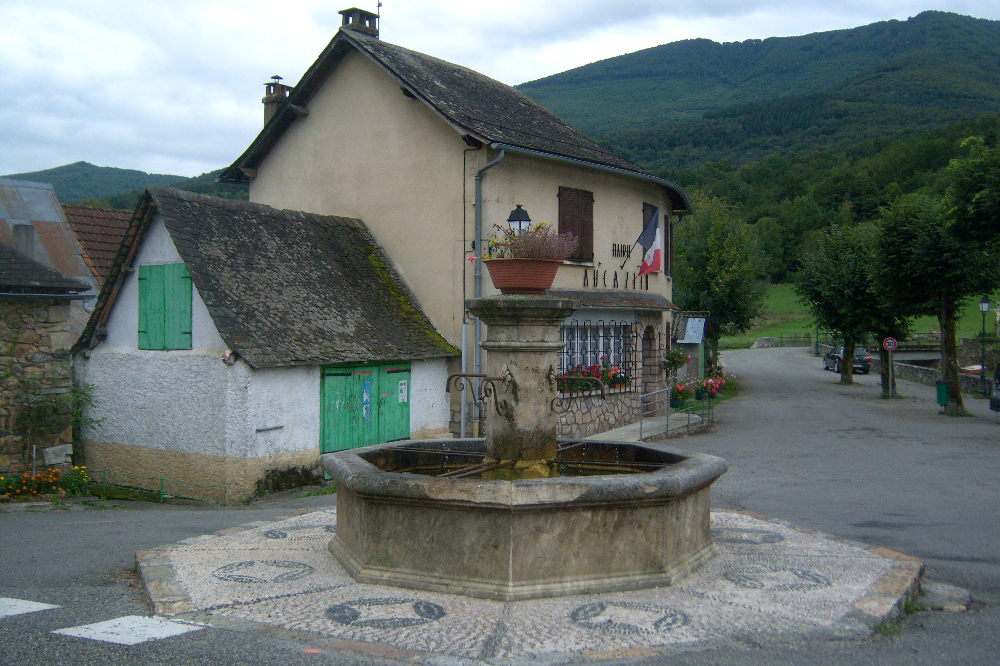

aucazein
Aucazein (en occitan Aucasenh) est une commune française, située dans le département de l'Ariège en région Occitanie
Localisée dans le nord-ouest du département, la commune fait partie, sur le plan historique et culturel, du Couserans, pays aux racines gasconnes structuré par le cours du Salat (affluent de la Garonne). Exposée à un climat de montagne, elle est drainée par la Bouigane et par divers autres petits cours d'eau. Incluse dans le parc naturel régional des Pyrénées ariégeoises, la commune possède un patrimoine naturel remarquable composé de quatre zones naturelles d'intérêt écologique, faunistique et floristique.
